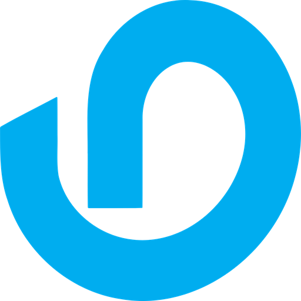

GLOBAL BUILD FUND Proposal open
$1Mfunding goalEvery contribution supports the platform build.
Build the organization that will connect the world’s best ideas with the people ready to move them forward.
Explore the campaignInvest in inBest is the first official project presented through inBestmen. Its goal is to raise $1,000,000 to establish the global organization, complete the technology layer, launch worldwide marketing and create the human review network that turns ideas into accountable progress.
See how the signal worksEvery contribution supports the platform build.

Coins + PayPalCoins are the participation units used inside inBestmen. One Coin is designed to track one US dollar and is purchased securely through PayPal before it is donated to a project.
Choose an amount and complete checkout through PayPal.
Your coin balance updates in your personal inBest wallet.
Donate your Coins to the ideas you want to help move forward.
These Coins are a platform participation model in this proposal, not a cryptocurrency or promise of financial return. Final payment and legal terms will be published before launch.
Build the product layer, Firebase foundation, AI intake and ElevenLabs project narration.
Create the human review, project advice, operations and compliance network.
Introduce inBestmen to creators, communities and future backers around the world.
Establish transparent reporting, payment operations and the public launch framework.
This portfolio will grow as Invest in inBest moves from proposal to organization, platform and global community.
Member dashboards, project profiles and the Coin experience.
A global group helping projects become clearer and stronger.
Transparent participation through Coins and project momentum.
A living showcase of the ideas the community helps launch.